UH WIND TUNNEL RESEARCH LAB • May 2025 — April 2026
Static Pressure Measurement System
Design, fabrication, validation, and field deployment of a custom atmospheric pressure-measurement system developed for a 50 m research tower in Alabama.
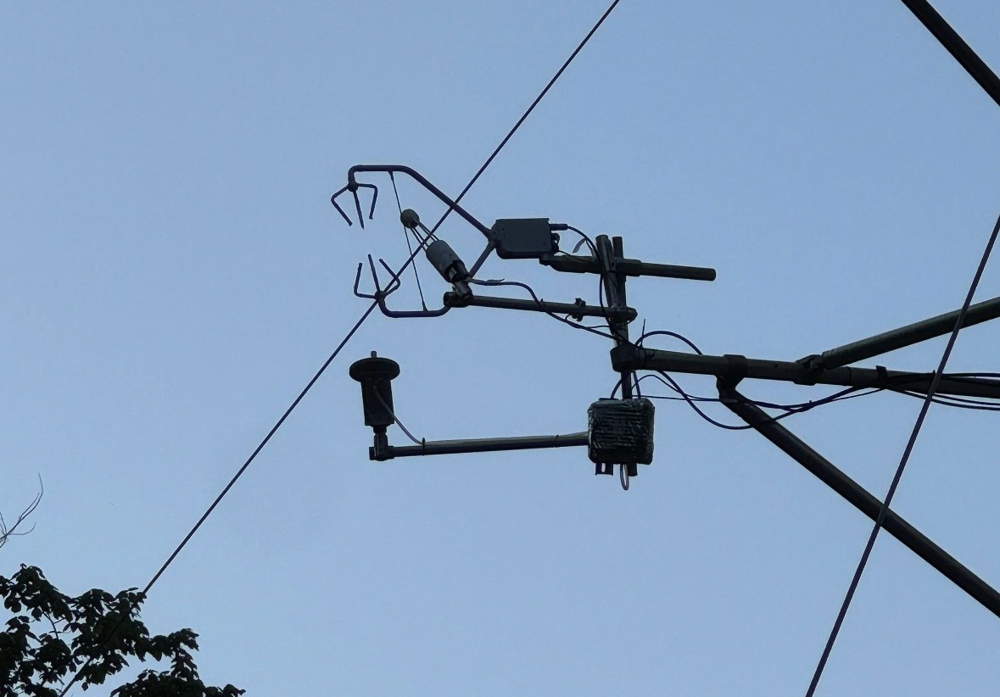
Final instrumentation installed adjacent to existing atmospheric measurement hardware on the Alabama tower.OVERVIEW
From laboratory prototype to field Deployment.
This project focused on developing a custom pressure-measurement system capable of measuring atmospheric pressure fluctuations near existing CSAT-3B instrumentation on a 50 m research tower in Alabama.
The system progressed through circuit development, embedded programming, mechanical design, resin fabrication, controlled wind-tunnel testing, backup-power validation, and final preparation for field deployment.
MY ROLE
Electrical, mechanical, and experimental development.
I developed the pressure-measurement system from the electronics through laboratory validation.
I designed the sensor circuit, wrote the Arduino code, designed the static-pressure port and CSAT-3B mounting in CAD, resin printed and assembled the mechanical hardware, and performed the wind-tunnel testing used to select the final operating configuration.
Circuit Design
Designed the pressure-sensor electronics and power system used in the field instrumentation system.
Arduino Firmware
Developed the embedded code used for BMP581 pressure acquisition and microcontroller operation.
Mechanical CAD
Designed the static-pressure port mount near the CSAT-3B sensing region.
Resin Fabrication
Resin printed, post-cured, assembled, and prepared the static-pressure ports for testing and deployment.
Wind-Tunnel Testing
Evaluated multiple oversampling and sampling-rate configurations under controlled airflow.
Field-Ready System
Finalized and prepared the instrumentation package that was sent to Alabama for deployment on the research tower.
The RS-485 and datalogger-side programming was developed by my lab partner as part of the collaborative research project.
SYSTEM ARCHITECTURE
Pressure measurement from static port to datalogger.
Sensor Circuit
Each measurement module used a BMP581 pressure sensor connected to a Nucleo microcontroller. Pressure measurements were transferred into the tower data-acquisition system through RS-485 communication.
The circuit incorporated 12 V power distribution, voltage conversion, common grounding, and 120 Ω communication termination.
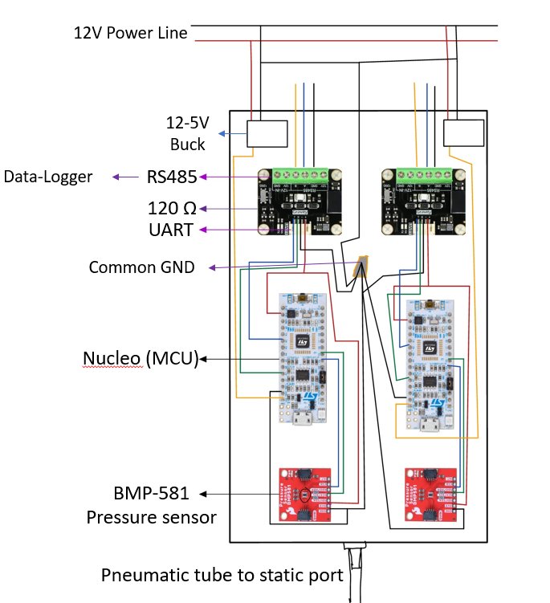
POWER RELIABILITY
Data acquisition during a loss of external power.
A 12.8 V, 50 Ah battery was integrated into the system to provide backup power during loss of the primary AC supply.
During testing, the main wall-power connection was physically disconnected while the system was collecting data. The battery-backed system continued operating, demonstrating continued data acquisition during an external power interruption.
Backup-power test with the primary wall supply disconnected while the system continued operating.
ELECTRONICS DEVELOPMENT
Building the pressure-sensor modules.
Five field measurement boxes were prepared for tower installation. The video below shows the pressure-sensor electronics before their final field integration.
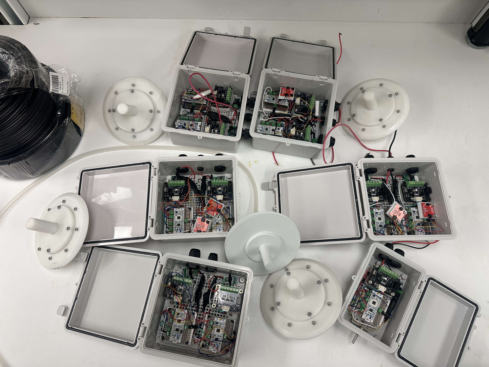
Completed pressure-sensor electronics and static-pressure hardware before field deployment.
CSAT-3B INTEGRATION
Measuring pressure near the existing atmospheric sensors.
The static-pressure ports were positioned near the CSAT-3B sensing region so pressure fluctuations could be measured close to the location of the existing atmospheric measurements.
I designed the mounting geometry so the static pressure port could be integrated with the tower instrumentation while maintaining the intended measurement location near the CSAT-3B prongs.
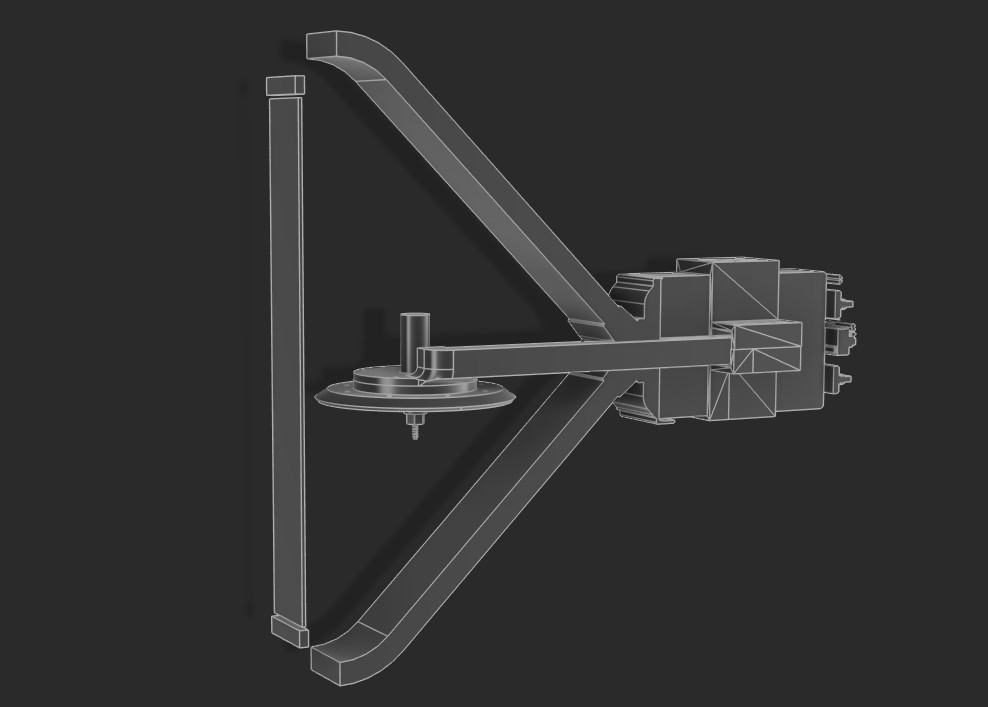
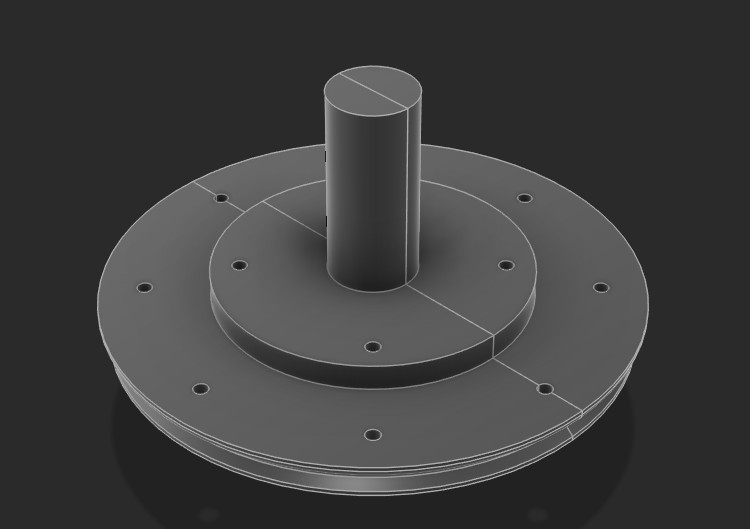
STATIC PORT DEVELOPMENT
From CAD geometry to finished hardware.
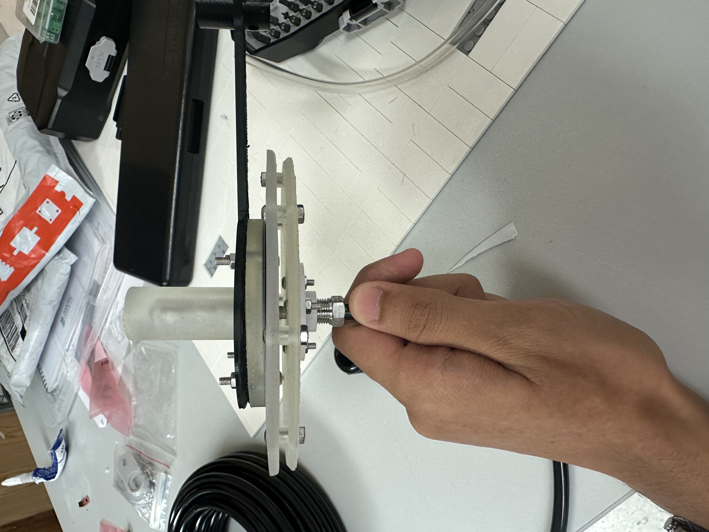
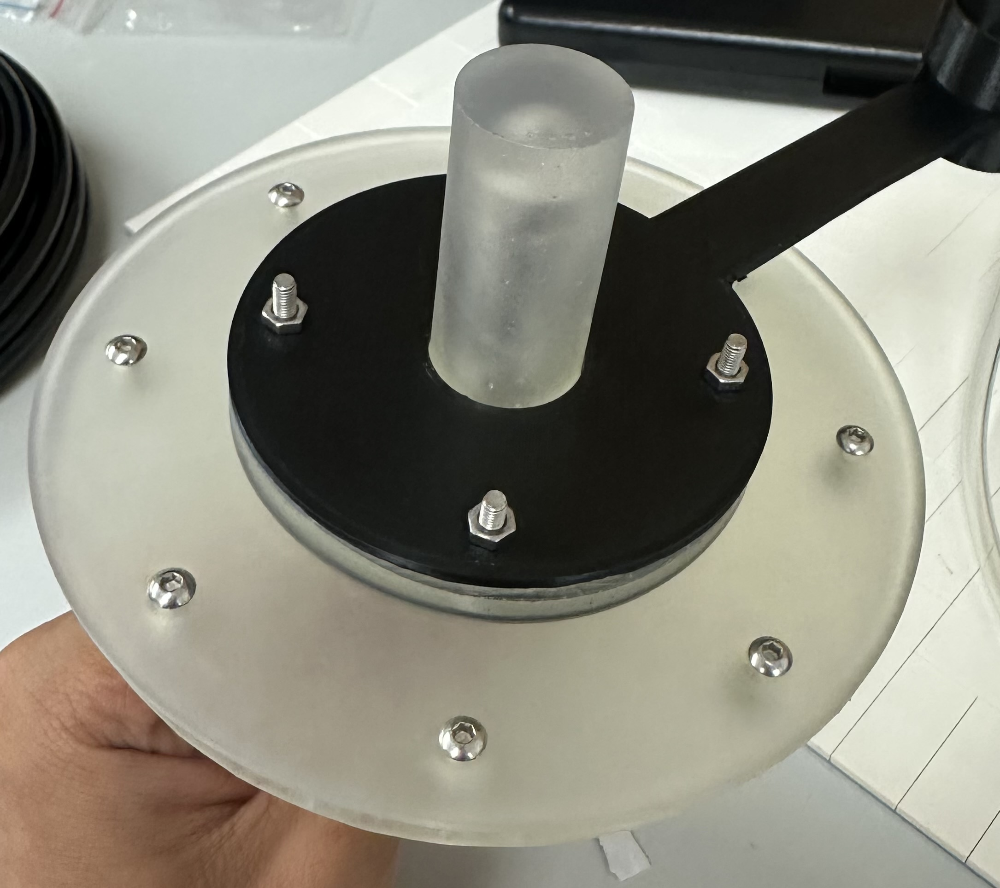
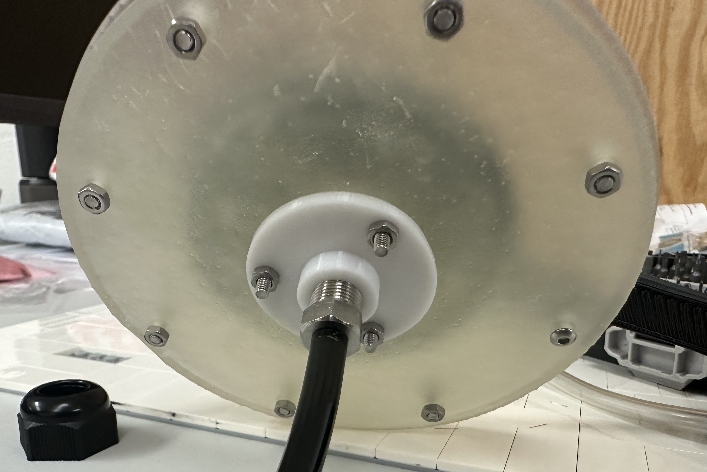
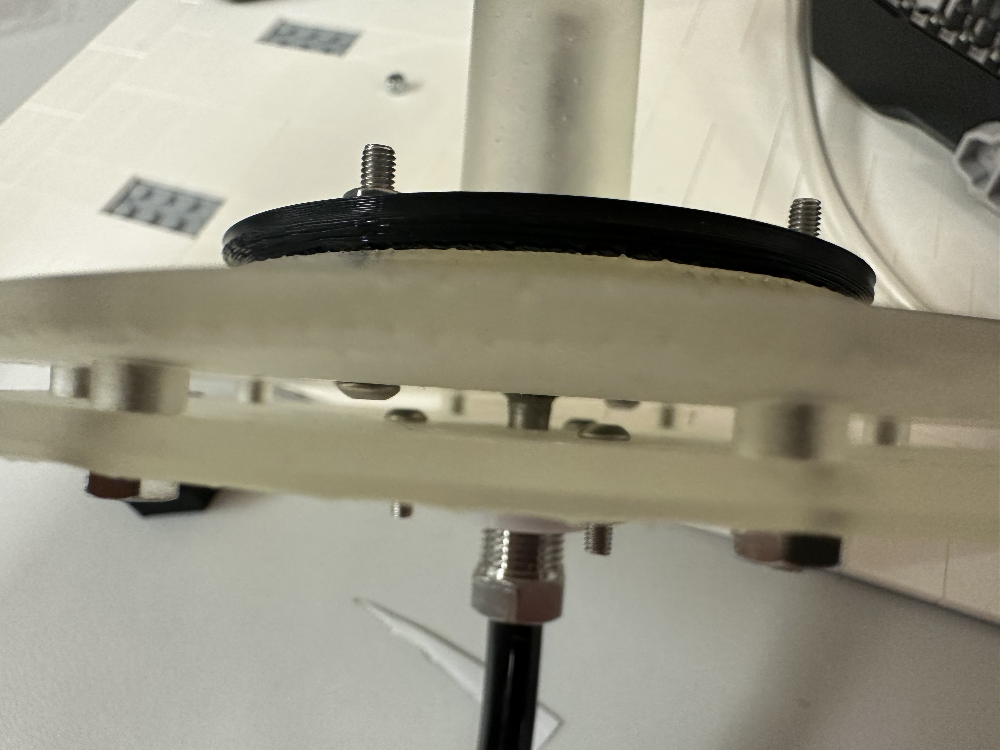
RESIN FABRICATION
Formlabs Form 4 + Tough 1000.
Final static-port components were fabricated using a Formlabs Form 4 resin printer with Tough 1000 material.
Parts were post-processed and light-cured before assembly to create durable mechanical components for the field instrumentation system.
Post-curing one of the resin-printed static-pressure components.
WIND-TUNNEL VALIDATION
Controlled testing before deployment.
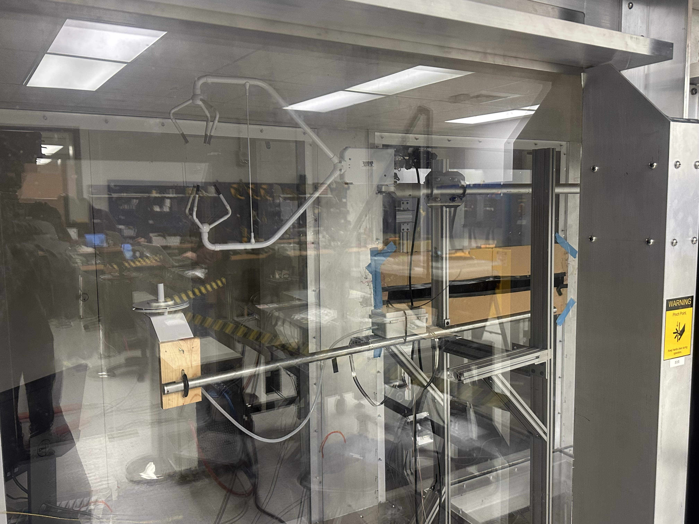
Test Procedure
The pressure-measurement system was tested in the University of Houston wind tunnel at three controlled airspeeds.
Different oversampling-ratio and sampling-frequency combinations were evaluated during testing before the final operating configuration was selected.
SENSOR CONFIGURATION TESTING
Comparing OSR and sampling-rate configurations.
Development testing began with higher-frequency configurations and progressively moved toward lower sampling frequencies. Power spectral density plots were used to compare pressure response under the different configurations.
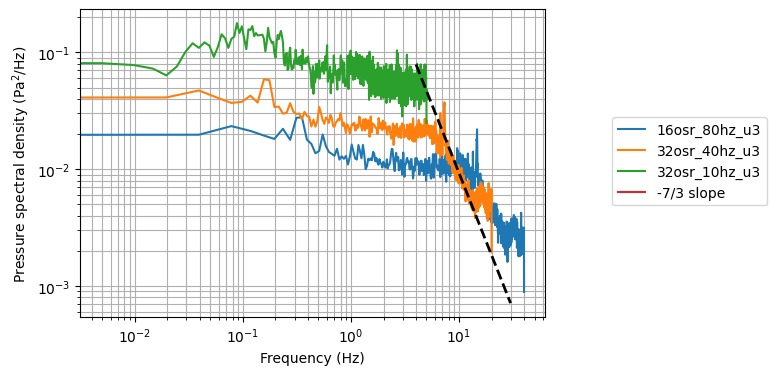
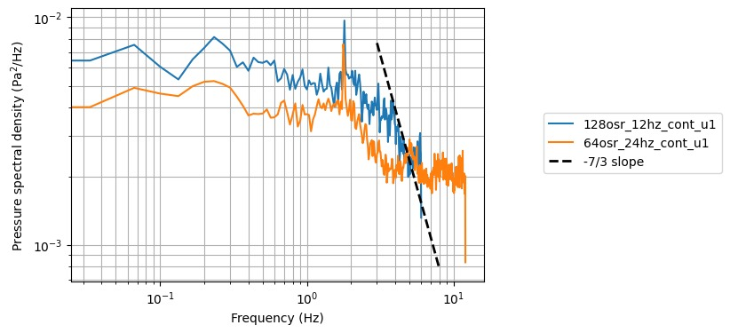
FINAL CONFIGURATION
10 Hz selected for field deployment.
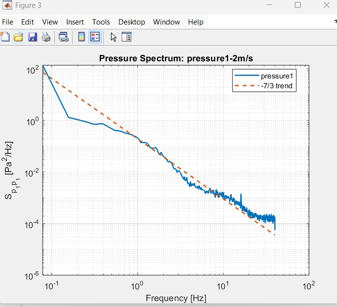
Following the wind-tunnel testing, the 10 Hz operating configuration was selected for the field system. The resulting pressure spectrum demonstrated the spectral behavior required before field deployment.
FIELD DEPLOYMENT
50 m atmospheric research tower in Alabama.
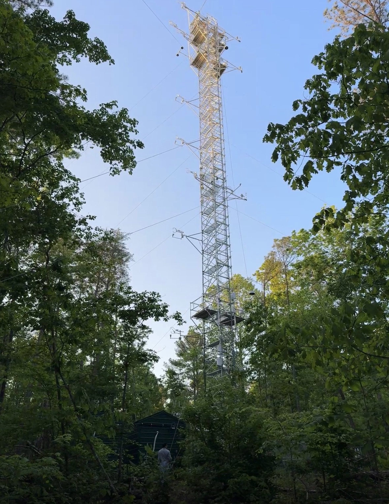
FIELD REDUNDANCY
Independent sensors across two dataloggers.
Five pressure-measurement stations were installed at 8 m, 16 m, 26 m, 31 m, and 43 m. The 8 m, 16 m, and 26 m stations each used two independent BMP581 sensors connected across the two CR1000X dataloggers. The 31 m and 43 m stations used one sensor each.
RELIABILITY IN THE FIELD
The system proved useful during deployment.
16 m Station
Datalogger 1 sensor → Poor-quality data
Datalogger 2 sensor → Usable data
26 m Station
Datalogger 1 sensor → Usable data
Datalogger 2 sensor → Poor-quality data
The field results demonstrated the value of the redundant architecture. A degraded sensor channel did not eliminate pressure measurements at the affected height because the second independent sensor continued providing usable data.
FIELD RESULTS
Atmospheric pressure-fluctuation spectra.
Field measurements were processed using power spectral density analysis to evaluate the frequency behavior of atmospheric pressure fluctuations. Reference −5/3 and −7/3 spectral slopes were included for comparison with the measured pressure spectra.
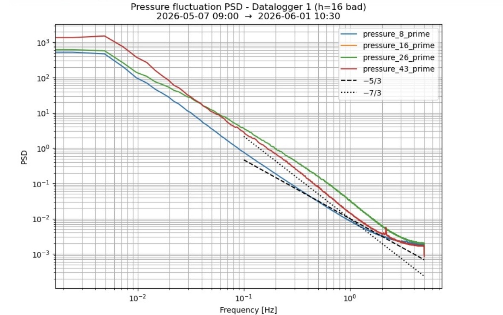
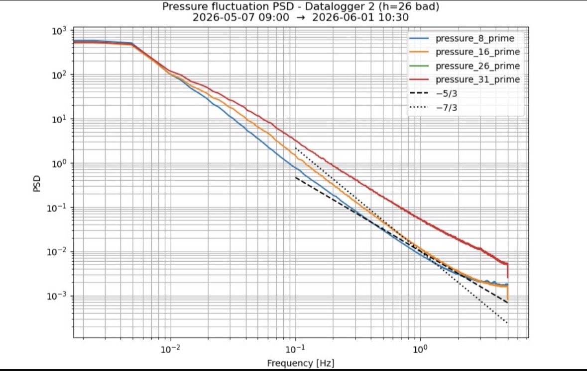
The measured field spectra exhibited regions consistent with the −7/3 reference trend.
The final pressure-measurement system progressed from component-level development and controlled wind-tunnel validation to field measurements on the 50 m Alabama atmospheric tower.